Costa del Sol · Mijas
Immobilien zum Verkauf in Mijas
Wohnungen mit Meerblick nahe am Strand von La Cala, Häuser an den Golfplätzen und Villen in den Hügeln. Hier finden Sie die Immobilien, die wir heute in Mijas verkaufen, mit einem kurzen Überblick über die Viertel und die echten Kaufkosten.
- 33Immobilien zum Verkauf in Mijas
- ab 256.600 €für eine neue Wohnung
- ca. 25 Min.zum Flughafen Málaga
- Golftalviele Plätze dicht beieinander
Jetzt zu verkaufen
Immobilien zum Verkauf in Mijas
Vor allem neue Wohnungen mit 1 bis 3 Schlafzimmern, viele mit Meer- oder Golfblick und großen Terrassen, dazu Reihenhäuser und Villen in den Golfgebieten. Die Preise sind die heutigen Angebotspreise; fragen Sie uns nach der aktuellen Verfügbarkeit.
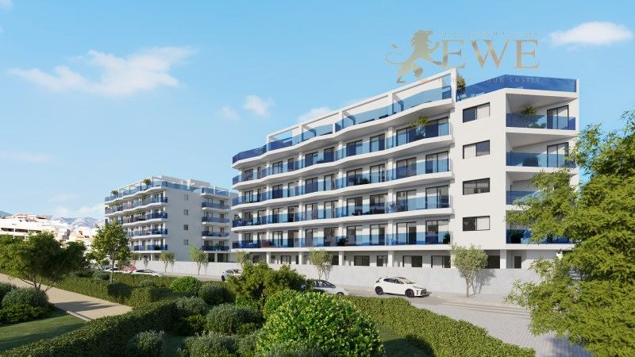
Mijas
Investment apartments in Mijas
256.600 €
1 Schlafzimmer · 1 Bad · 34 m²Ref. EWE3819
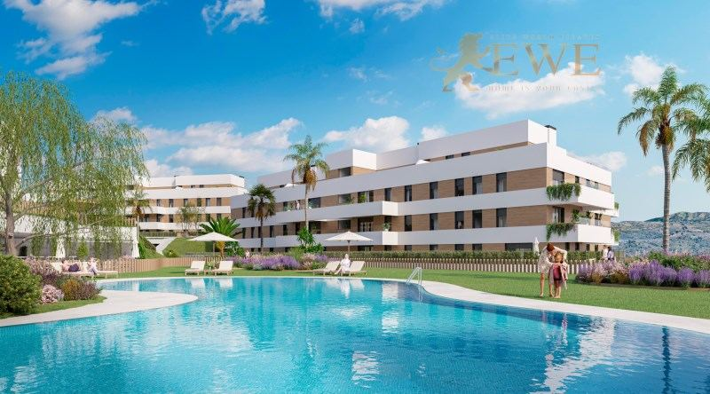
Mijas
Modern Golf Front Apartments for Sale in La Cala de Mijas
358.000 €
2 Schlafzimmer · 2 Bäder · 63 m²Ref. EWE3771
Fertigstellung: 4Q 2028
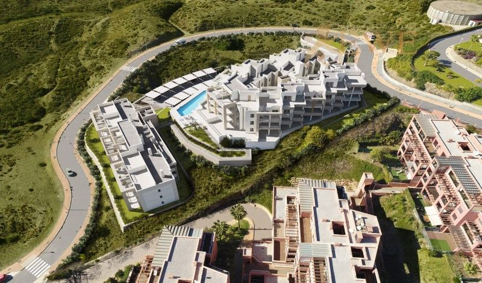
Mijas
Apartments with sea and mountain views 4 km from the beach in Mijas
383.000 €
2 Schlafzimmer · 2 Bäder · 82 m²Ref. EWE3853
Fertigstellung: ab 1Q 2027
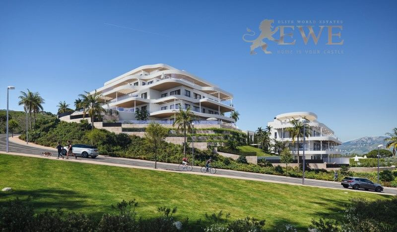
Mijas
Panoramic sea view apartments in Mijas
390.000 €
1 Schlafzimmer · 1 Bad · 49 m²Ref. EWE3820
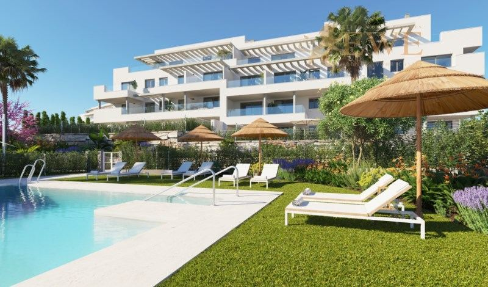
Mijas
Excellent apartment 250 m from the beach in Mijas
390.400 €
2 Schlafzimmer · 2 BäderRef. EWE3246
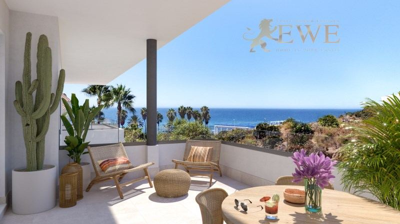
Mijas
Excellent apartment 2 minutes walk from the beach in Mijas
396.000 €
3 Schlafzimmer · 2 Bäder · 83 m²Ref. EWE3228
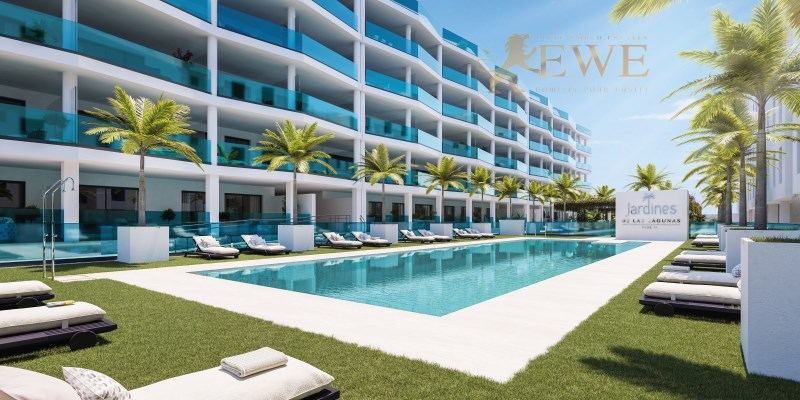
Mijas
Modern apartment in the picturesque town of Mijas, Málaga
411.000 €
2 Schlafzimmer · 2 Bäder · 75 m²Ref. EWE2313
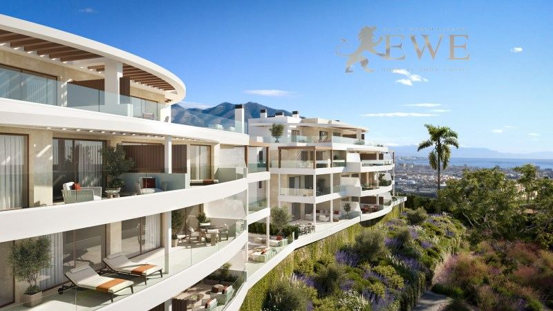
Mijas
A unique sea-view apartment in Mijas
421.000 €
2 Schlafzimmer · 2 Bäder · 64 m²Ref. EWE3679
Fertigstellung: 4Q 2027
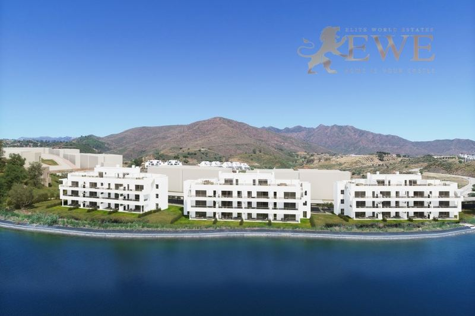
Mijas
Apartments with golf course views in La Cala de Mijas
450.000 €
2 Schlafzimmer · 2 Bäder · 88 m²Ref. EWE3850
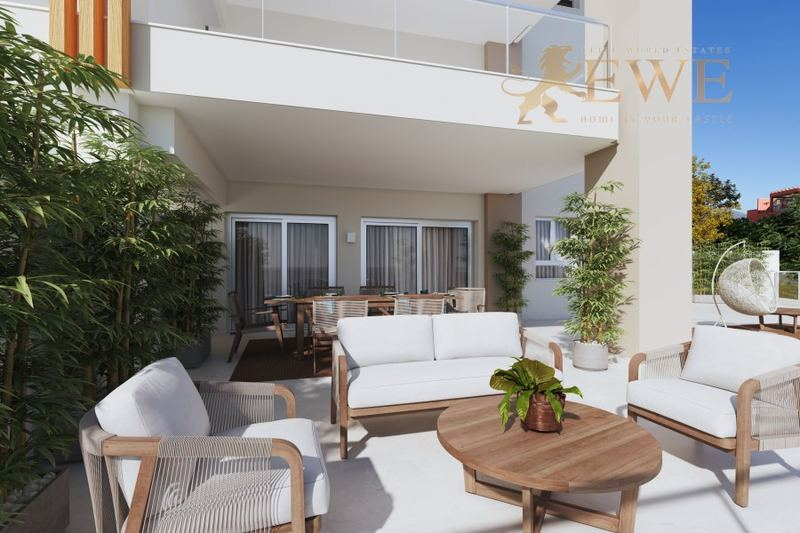
Mijas
Sea view apartments 4 km from the beach in Mijas
455.000 €
3 Schlafzimmer · 2 Bäder · 99 m²Ref. EWE3854
Fertigstellung: 4Q 2027
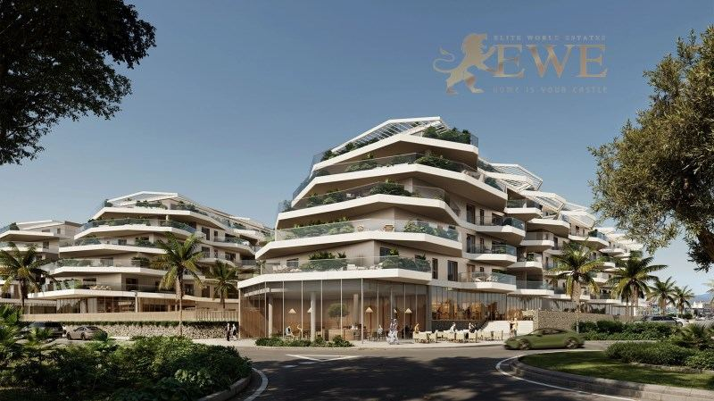
Mijas
New Apartments for Sale in Fuengirola
458.000 €
2 Schlafzimmer · 2 Bäder · 72 m²Ref. EWE3842
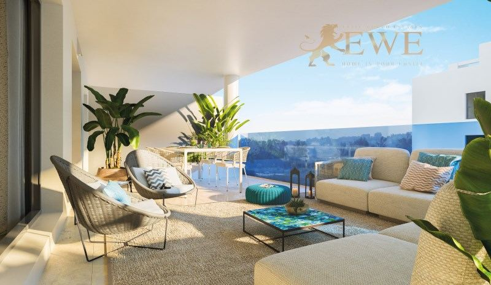
Mijas
Luxury apartment in the picturesque town of Mijas, Málaga
470.900 €
3 Schlafzimmer · 2 Bäder · 133.95 m²Ref. EWE2314
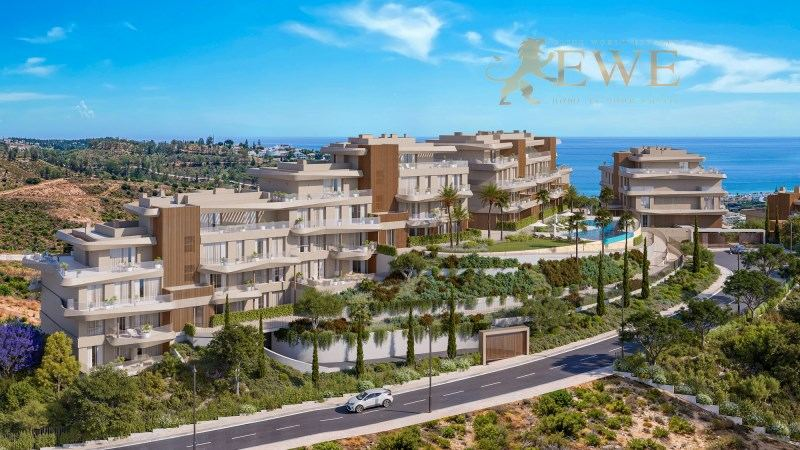
Mijas
Apartments with Sea Views 1 km from the Beach in La Cala de Mijas
482.400 €
1 Schlafzimmer · 1 Bad · 45 m²Ref. EWE3844
Fertigstellung: 4Q 2028
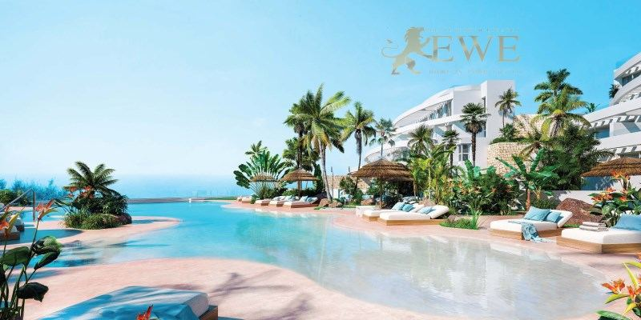
Mijas
Exclusive apartment with sea views in Cala de Mijas
531.000 €
2 Schlafzimmer · 2 Bäder · 80 m²Ref. EWE3233
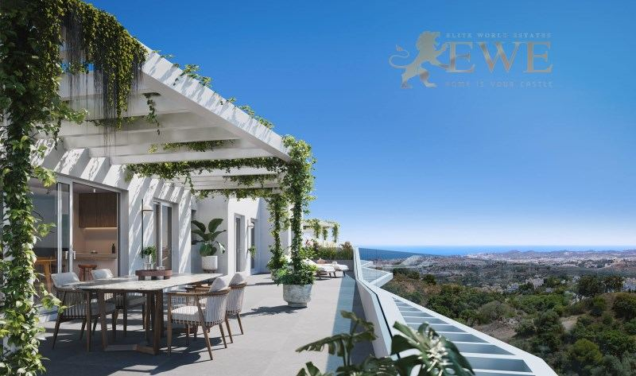
Mijas
Fantastic apartment with a sea view in Mijas
538.700 €
2 Schlafzimmer · 2 Bäder · 80.25 m²Ref. EWE3147
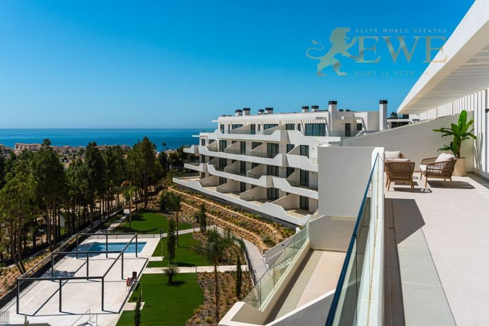
Mijas
Stunning Sea View Apartments 700 m from the Beach in Mijas
580.000 €
3 Schlafzimmer · 2 Bäder · 82 m²Ref. EWE3243
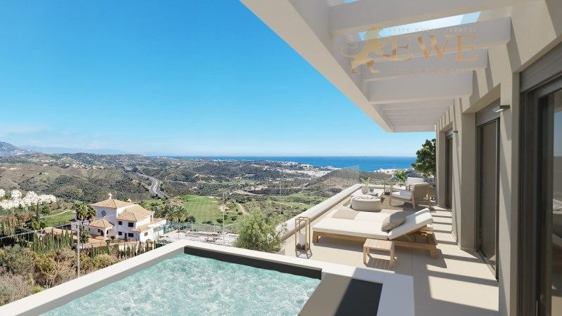
Mijas
Exclusive apartment with sea view in Mijas
645.000 €
2 Schlafzimmer · 2 Bäder · 73 m²Ref. EWE3280
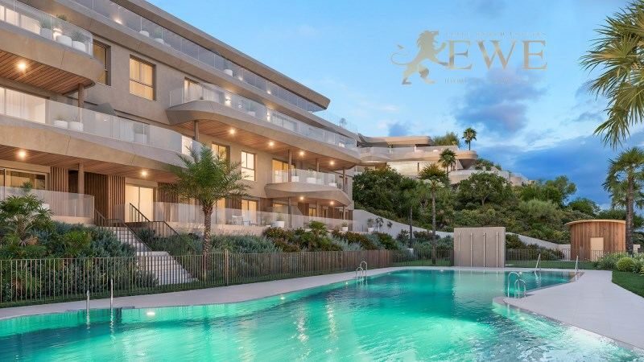
Mijas
Exclusive apartments with sea views in La Cala de Mijas
647.800 €
2 Schlafzimmer · 2 Bäder · 102 m²Ref. EWE3869
Fertigstellung: 4Q 2028
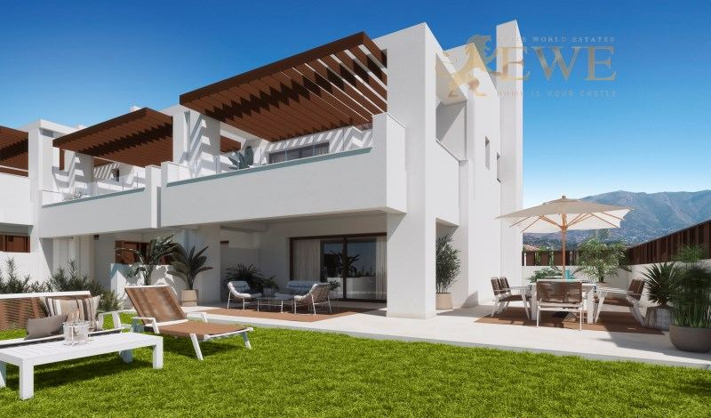
Mijas
Townhouses with golf course views in La Cala de Mijas
650.000 €
3 Schlafzimmer · 3 Bäder · 226 m²Ref. EWE3852
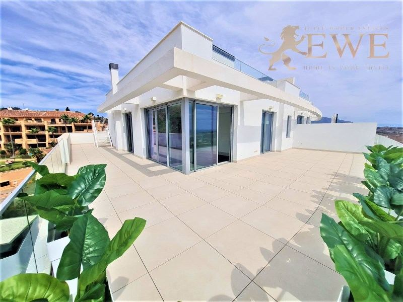
Mijas
Luxurious penthouse in the heart of the Costa del Sol
675.000 €
2 Schlafzimmer · 2 Bäder · 107 m²Ref. EWE2207
Bezugsfertig
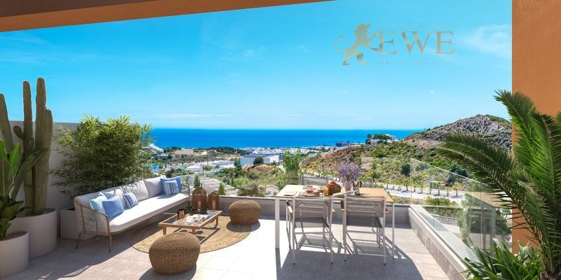
Mijas
Elegant terraced house with sea views in Mijas
676.000 €
3 Schlafzimmer · 3 Bäder · 110 m²Ref. EWE3215
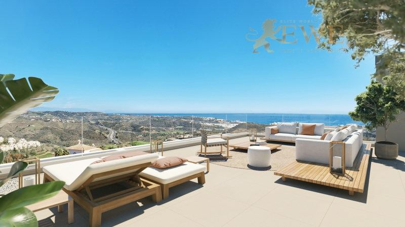
Mijas
Exclusive apartment with sea view in Mijas
720.000 €
2 Schlafzimmer · 2 Bäder · 94 m²Ref. EWE3190
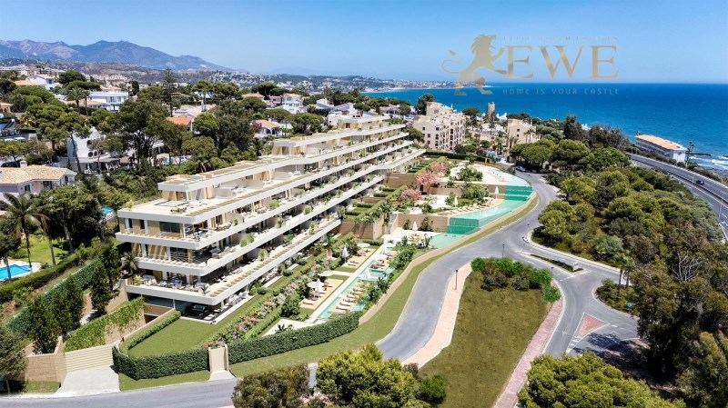
Mijas
Luxury sea view apartments in Mijas
795.000 €
2 Schlafzimmer · 2 Bäder · 88 m²Ref. EWE3824
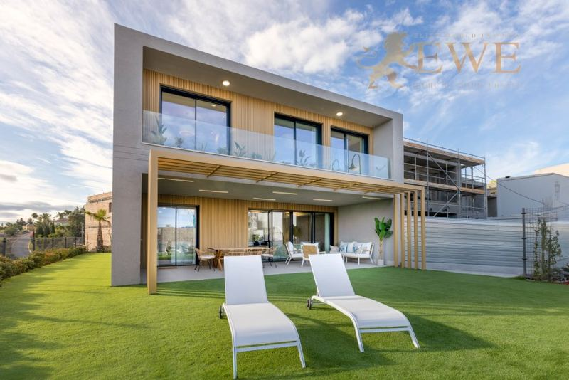
Mijas
Semi-detached house right next to El Chaparral Golf Course in Mijas
891.000 €
4 Schlafzimmer · 3 Bäder · 144 m²Ref. EWE3200
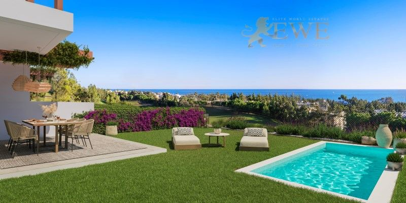
Mijas
Elite semi-detached villa with spacious terrace in Mijas
949.000 €
3 Schlafzimmer · 2 Bäder · 118 m²Ref. EWE2293
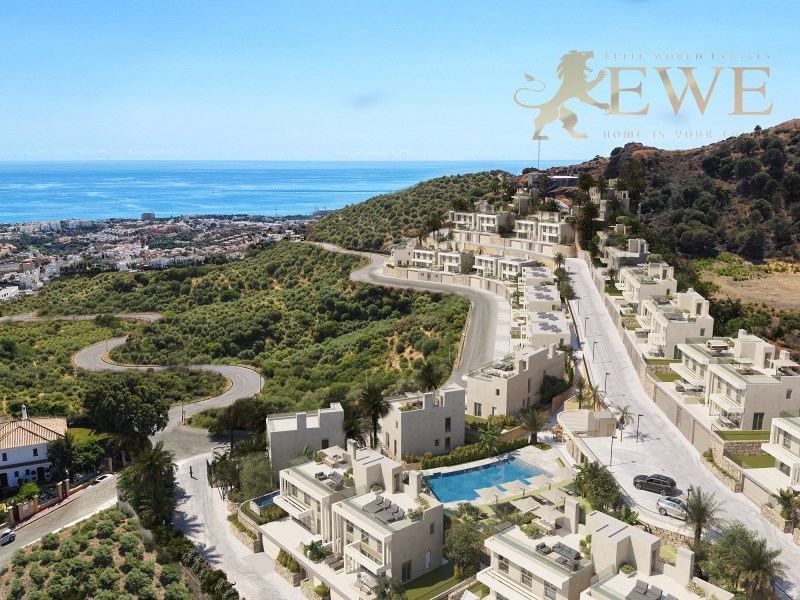
Mijas
New 4-Bedroom Homes Near Golf in Calanova, Mijas
970.000 €
4 Schlafzimmer · 3 Bäder · 198 m²Ref. EWE3892
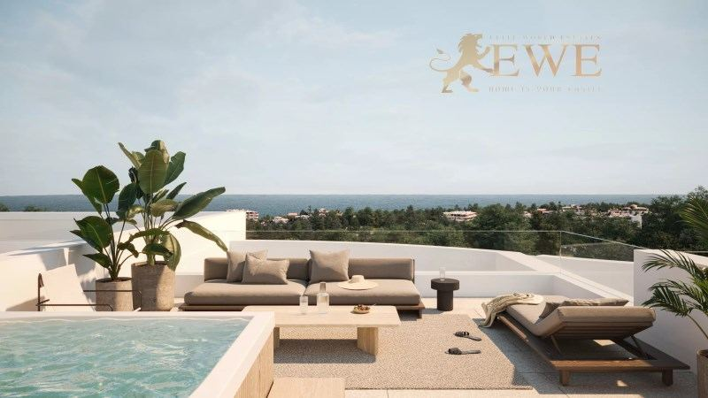
Mijas
Luxury terraced house with jacuzzi overlooking the sea in Mijas
980.000 €
3 Schlafzimmer · 409.1 m²Ref. EWE3189
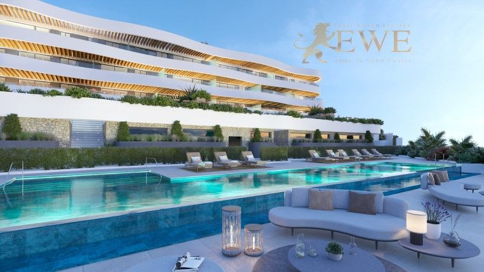
Mijas
A apartment near the beach in Mijas
1.056.000 €
2 Schlafzimmer · 2 Bäder · 92 m²Ref. EWE3648
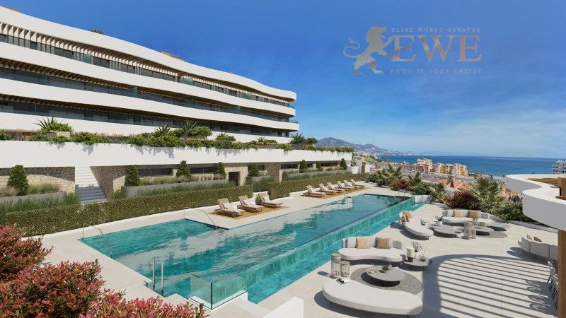
Mijas
A stunning apartment 190 m from the beach in Mijas Costa
1.106.000 €
2 Schlafzimmer · 2 Bäder · 92 m²Ref. EWE3198
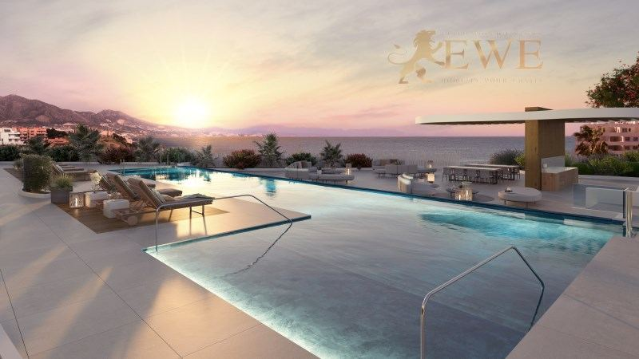
Mijas
Spectacular penthouse with sea views in Mijas Costa
1.206.000 €
3 Schlafzimmer · 3 Bäder · 120 m²Ref. EWE3199
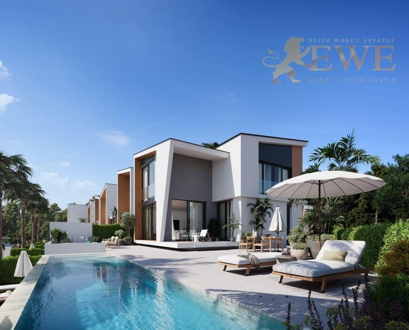
Mijas
Avant-garde villa on El Chaparral Golf Course, Marbella
1.324.000 €
3 Schlafzimmer · 3 Bäder · 189 m²Ref. EWE3149
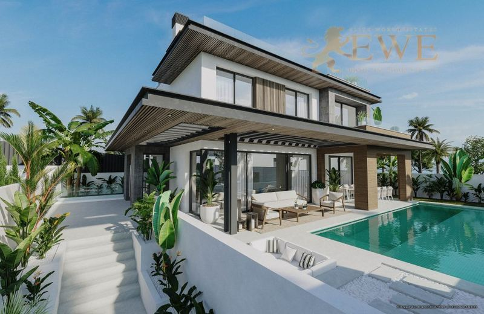
Mijas
Exclusive villa with sea views and luxurious amenities in Mijas
1.860.000 €
3 Schlafzimmer · 3 Bäder · 226 m²Ref. EWE2208
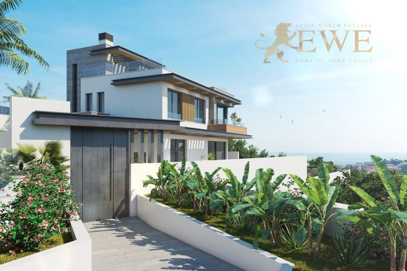
Mijas
Elegant villa with sea views in Calanova Golf in Mijas
1.860.000 €
3 Schlafzimmer · 3 Bäder · 226 m²Ref. EWE2209
Die Stadt
Leben in Mijas
Mijas ist eine große Gemeinde an der Costa del Sol mit rund 90.000 Einwohnern, zwischen Fuengirola und Marbella. Sie hat zwei sehr verschiedene Seiten: Mijas Pueblo, ein weißes Dorf am Berg mit Blick über die Küste, und Mijas Costa, einen langen Streifen aus Stränden und Wohngebieten am Meer.
La Cala de Mijas ist das Herz der Küste, mit Sandstrand, Promenade und einem kleinen Ortskern mit Geschäften und Restaurants. Im Hinterland liegt eines der besten Golfgebiete Spaniens, mit Plätzen wie La Cala, Calanova und El Chaparral dicht beieinander und neuen Häusern rundherum.
Mijas hat eine große internationale Gemeinschaft, Schulen und Gesundheitszentren, und das Leben läuft das ganze Jahr. Der Flughafen Málaga ist mit dem Auto etwa 25 Minuten entfernt, Fuengirola und Marbella 10 bis 20 Minuten.
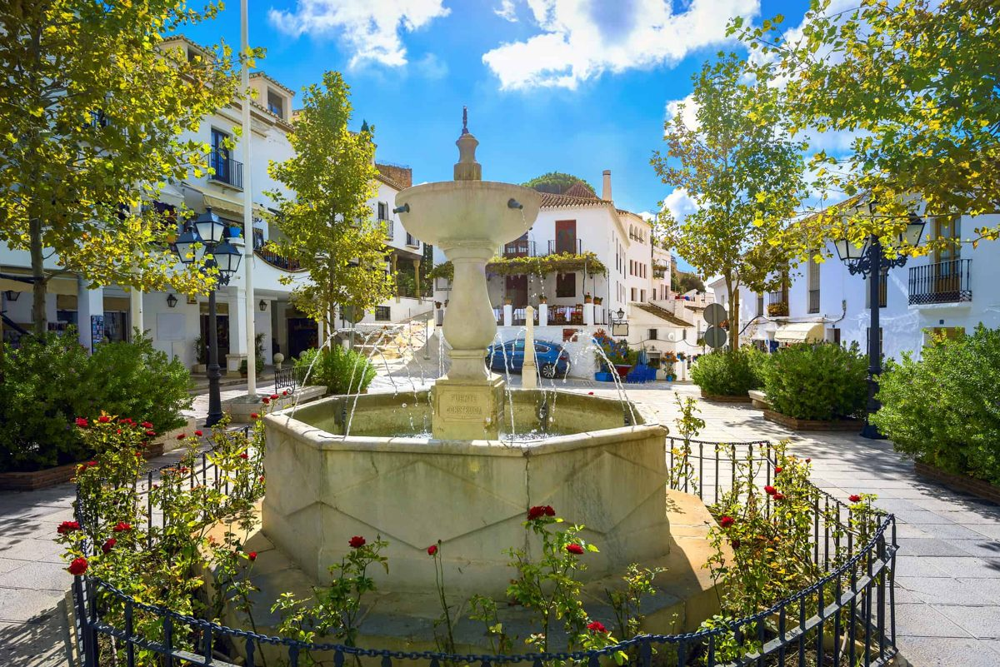
Wo kaufen
Die wichtigsten Viertel von Mijas
La Cala de Mijas
Der Strandort von Mijas Costa, mit Promenade, Geschäften und Restaurants. Wohnungen nahe am Meer, viele mit Meerblick.
Calanova und La Cala Golf
Das Golftal wenige Minuten landeinwärts, mit mehreren Plätzen. Wohnungen, Reihenhäuser und Villen mit Golf- und Meerblick.
El Chaparral
Ein Golfplatz an der Grenze zu Marbella, nahe am Strand. Doppelhaushälften und Villen direkt am Platz.
Calahonda und Riviera del Sol
Grüne Wohngebiete an der Küste zwischen La Cala und Marbella, mit Wohnungen und Villen nahe am Strand.
Mijas Pueblo
Das weiße Dorf am Berg, mit engen Gassen und Blick über die Küste. Wohnungen und Dorfhäuser.
Nahe Fuengirola
Die Viertel von Mijas direkt neben Fuengirola, mit Geschäften und Versorgung zu Fuß. Moderne Wohnungen zum Leben das ganze Jahr.
Budget
Was der Kauf in Mijas kostet
Zum Kaufpreis kommen Steuern und Gebühren. Für eine neue Immobilie zu 482.400 € sind das zum Beispiel 48.240 € Mehrwertsteuer und 5.789 € Stempelsteuer, dazu Notar, Grundbuch und Anwalt. Für Bestandsimmobilien gelten andere Steuern, fragen Sie uns also immer nach der genauen Summe für die Immobilie, die Ihnen gefällt.
| Neubau | 10 % Mehrwertsteuer (IVA) + 1,2 % Stempelsteuer (AJD) |
|---|---|
| Bestandsimmobilie | 7 % Grunderwerbsteuer (ITP) |
| Notar, Grundbuch, Anwalt | ca. 1,5–2,5 % des Preises |
| Jedes Jahr | Grundsteuer IBI und Gemeinschaftskosten, je nach Immobilie |
Fragen
Immobilienkauf in Mijas: Fragen und Antworten
Was kostet eine Wohnung in Mijas?
Unsere neuen Wohnungen in Mijas beginnen heute bei 256.600 €. Die meisten Wohnungen mit 2 oder 3 Schlafzimmern, die wir verkaufen, kosten zwischen 380.000 € und 800.000 €, je nach Aussicht und Entfernung zum Strand. Reihenhäuser gibt es ab etwa 650.000 €, Villen bis 1,86 Mio. € in Calanova Golf.
In welchem Viertel von Mijas kauft man am besten?
Das hängt davon ab, wie Sie die Immobilie nutzen wollen. La Cala de Mijas passt zu Käufern, die den Strand und einen kleinen Ortskern wollen. Calanova, La Cala Golf und El Chaparral sind für Golfer, Mijas Pueblo für das Dorfleben mit Aussicht.
Wie weit ist Mijas vom Flughafen entfernt?
Der Flughafen Málaga ist von La Cala de Mijas mit dem Auto etwa 25 Minuten entfernt, und der Zug vom nahen Fuengirola fährt direkt zum Flughafen.
Welche Kosten kommen zum Kaufpreis hinzu?
In Andalusien zahlen Sie bei einem Neubau 10 % Mehrwertsteuer und 1,2 % Stempelsteuer, bei einer Bestandsimmobilie 7 % Grunderwerbsteuer. Notar, Grundbuch und Anwalt kosten zusammen etwa 1,5–2,5 %.
Können Ausländer in Mijas eine Immobilie kaufen?
Ja. Jeder kann in Spanien eine Immobilie kaufen. Sie brauchen eine spanische Steuernummer (NIE) und meist ein spanisches Bankkonto, und wir helfen Ihnen bei beidem. Mehr dazu in unserem Ratgeber zur NIE-Nummer.


Sie suchen ein Zuhause in Mijas?
Nennen Sie uns Ihr Budget und Ihre Wünsche. Wir antworten innerhalb eines Werktags, auf Deutsch, Englisch, Spanisch oder Polnisch.